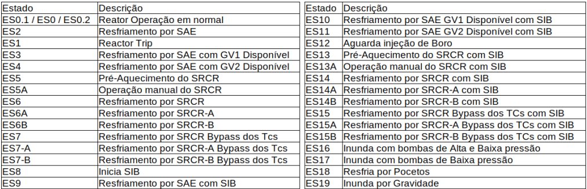

Controle da Reatividade (Desligar o Reator)
Remoção de Calor Residual (mesmo desligado, precisa 1 a 7%) - ATENÇÃO!
Barreiras contra emissão de material radioativo (Integridade do Primário e da
Contenção)
Classificação Elétrica 1E
Redundâncias: 2 para alimentação elétrica; 4 para sensores e lógica; 2 para
atuadores
O SCS é um sistema de segurança que possibilita a atuação manual (diversa do SPP) dos equipamentos 1E.
● Monitorar continuamente as taxas de
dose, concentrações de atividades em
linhas de processo, concentração de
gases, particulados e iodos radioativos
de efluentes e dos ambientes,
concentração de trítio, seja em
condições normais de operação da
planta ou pós-acidente
● Alertar quanto a um princípio de mal funcionamento na unidade que pode redundar em
consequências danosas ao estabelecimento e ao meio ambiente
● Iniciar ação automática corretiva em caso de crescimento do nível de radiação em pontos
pré-estabelecidos, visando minimizar ou, até eliminar, as consequências daquele crescimento
anormal.
É feita por meio de detectores e monitores fixos e portáteis distribuídos em pontos estratégicos da instalação.
No SMR estão incluídos equipamentos para monitoração da concentração de hidrogênio no ar da Contenção, amostradores de trítio, iodo, particulado e equipamentos para monitoração individual de trabalhadores.
• Prédio do Reator (PR);
• Prédio das Turbinas (PT);
• Prédio do Combustível (PC),
• Prédio Auxiliar Controlado (PAC);
• Prédio Auxiliar Não Controlado (PANC);
• Prédio de Prep. e Testes de Embalagem (PPTE); e
• Prédio de Armaz. Intermediário de Rejeitos (PAIR)
• Subsistema da Monitoração de Área (SSMA)
- responsável pela monitoração das áreas da Instalação;
• Subsistema da Monitoração de Processo (SSMP)
- responsável pela monitoração dos itens afetos ao processo da Instalação; e
• Subsistema de Monitoração de Individual (SSMI)
- responsável pela monitoração dos IOE que adentram a Instalação.
O alarme sonoro pode ser inibido mediante a inserção de senha, porém o alarme visual não pode ser inibido.
Detecção apenas de radiação gama.
Monitores não possuem ação automática, ou seja, não enviam sinais para acionar
outros equipamentos, tais como: válvulas, “dampers”, etc.
57 monitores fixos espalhados estrategicamente na instalação
Detectar os vazamentos de sistemas radioativos para sistemas não-radioativos;
• Monitorar as condições da planta e fornecer os alarmes (SCS e SDCP);
• Fornecer os sinais para o SCS promover isolamento das vias de liberação
por meio de ações automáticas de forma a impedir ou minimizar
liberações significativas de material radioativo para o meio ambiente;
• Fornecer informações para a Sala de Comando, Sala de Proteção
Radiológica e Centro de Suporte Técnico sobre as condições radiológicas
pós acidente, visando orientar nas implementações das ações de
emergência;
• Permitir o acompanhamento de longo prazo das condições radiológicas,
isto é, até a mitigação do acidente;
• Proteger a Sala de Comando de eventuais radionuclídeos provenientes
do ar externo.
• Efetuar a monitoração de eventuais vazamentos da contenção;
• Controle e Radioproteção dos Trabalhadores da planta;
• Monitoração e registro dos efluentes liberados pela planta;
• Monitoração pós acidente relativa a radiação;
• Monitoração dos processos operacionais da planta sob a ótica da radiação;
• Esse subsistema tem por finalidade a monitoração da contaminação
e o controle das taxas de dose dos IOE's durante a sua estada nas
áreas controladas da instalação.
• Gerenciamento com um banco de dados que fará o controle das
taxas de dose dos IOEs, apresentando/informando o pessoal de
proteção radiológica quando da proximidade da ultrapassagem do
limite de dose, gráficos de tendências.
• Registro para fiscalização, controle de saúde e histórico da
instalação.
• Sistema de dosímetros eletrônicos individuais;
• Monitores de contaminação de pessoal nos pontos de acesso;
• Detectores de contaminação tipo “frisker”;
• Contadores de corpo inteiro para dosimetria interna;
• Monitores de mãos e pés.
• Estação de Gerenciamento de Dados (sem interface com o SDMR)
O Sistema de Monitoração Sísmica é um sistema N1E, que tem as seguintes funções:
• Medir continuamente através de sensores sísmicos (acelerômetros do
tipo tri-axial), as variações sísmicas dentro das condições
especificadas para a instalação;
• Registrar ocorrências e espectro de atividades sísmicas;
• Gerar alarme próprio e enviar sinal através de contato seco (livre de
potencial) para alarme na Sala de Comando do LABGENE (SCR); e
• Gerar gráfico de intensidade sísmica e armazenamento destas
informações.
6 acelerômetros tri-axiais de histórico de tempo, responsáveis em fornecer dados de frequência,
amplitude e relação de fase da resposta sísmica, após a ocorrência de um sismo. Estão instalados
nos seguintes locais:
1 no Campo livre;
3 no Prédio do Reator (PR);
2 no Prédio do Combustível (PC).
1. Ativação do sistema de gravação de sismo;
2. OBE (Operating Basis Earthquake) excedido;
3. SSE (Safe Shutdown Earthquake) excedido;
4. Excedido o Nível de Aceleração pré-estabelecido para o OBE;
5. Excedida a aceleração de resposta para qualquer das 12 frequências
naturais de cada eixo tri-ortogonal; e
6. Alarmes de indicação de falhas do sistema.
• Empregados em plantas nucleares:
○ Chaves magnéticas (reed switches); e (princípio que será utilizado no
LABGENE)
○ Bobinas. (não utilizado pela dificuldade de atender o requisito da
diversidade - 4 sensores por MAB)
Importante: o ímã, instalado na parte superior da haste do MAB, não é
redundante.
Enviar sinais de comando para o MAB;

1) Reactor Trip
2)Alinhamento e Acionamento do SRE(Sistema de Resfriamento de
Emergência)
3)Isolamento das Linhas da Contenção
4)Inundação da Contenção
5)Recirculação (Etapa Pocetos)
6)Acionameto do SIB(Sistema de Injeção de Boro)